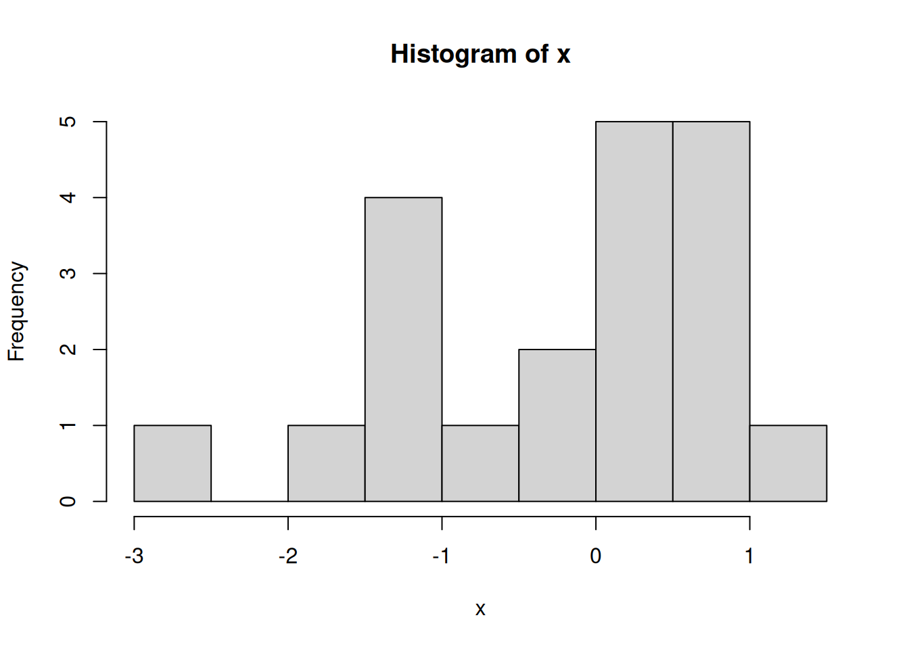

dnorm(1, mean=0, sd=1)[1] 0.2419707There are many common families of probability distributions and we have discussed six so far. The discrete distributions include the discrete Uniform, Bernoulli, and Binomial. The continuous distributions include the continuous Uniform, Normal, and t.
This chapter provides a set of examples to show you how to compute probabilities from a few of these distributions in R.
R has four normal distribution functions: dnorm( ), pnorm( ), qnorm( ), and rnorm( ).
dnorm(x,mean,sd)probability density function (PDF) - input:xis the value at which you want to evaluate the normal PDF - output: a positive number since the PDF \(f(x)\) must be positive - example: evaluate \(f(x)\)
pnorm(q,mean,sd)cumulative distribution function (CDF) - input:qis the value for which you want to find the area below/above - output: a probability - example: compute \(P(X<q)\)
qnorm(p,mean,sd)quantile function - input:pis a probability - output: a real number since \(X\in(-\infty,\infty)\) - example: find the value \(q\) such that \(P(X<q)=p\)
rnorm(n,mean,sd)random number generator - input:nis the number of observations you want to generate - output: a vector of n real numbers - example: generate n independent \(N(\mu,\sigma^2)\) random variables
More information is also accessible in R if you type ?dnorm, ?pnorm, ?qnorm, or ?rnorm.
To learn how to use these functions, we’ll start with a few exercises on the standard normal distribution which is a normal distribution with mean 0 and standard deviation of 1. We will then move on to the more general \(N(\mu,\sigma^2)\) distribution.
dnorm)When \(X\) is a continuous random variable, we know that \(P(X=x)=0\). Therefore, dnorm( ) does not return a probability, but rather the height of the PDF. Even though the height of the PDF is not a probability, we can still interpret density evaluations as the relatively likelihood of observing a certain value \(x\).
PROBLEM 1: Let \(X\sim N(0,1)\). Is the value \(x=1\) or \(x=-0.5\) more likely to occur under this normal distribution?
dnorm(1, mean=0, sd=1)[1] 0.2419707dnorm(-0.5, mean=0, sd=1)[1] 0.3520653pnorm)The pnorm( ) function is useful for evaluating probabilities of the form \(P(X\leq x)\) or \(P(X \geq x)\).
PROBLEM 2: If \(X\sim N(0,1)\), what is \(P(X<0)\)?
pnorm(0, mean=0, sd=1)[1] 0.5PROBLEM 3: If \(X\sim N(0,1)\), what is \(P(X<1)\)?
pnorm(1, mean=0, sd=1)[1] 0.8413447PROBLEM 4: If \(X\sim N(0,1)\), what is \(P(X>1)\)?
We have two ways of answering this question. First, we can recognize that \(P(X>1)=1-P(X\geq 1)\).
1-pnorm(1, mean=0, sd=1)[1] 0.1586553A second approach is to use the lower.tail option within the pnorm( ) function. When lower.tail=TRUE then the pnorm( ) function returns the probability to the left of a given number \(x\) and if lower.tail=FALSE then pnorm( ) returns the probability to the right of \(x\).
pnorm(1, mean=0, sd=1, lower.tail=FALSE)[1] 0.1586553PROBLEM 5: If \(X\sim N(0,1)\), what is \(P(0<X<1)\)
pnorm(1, mean=0, sd=1) - pnorm(0, mean=0, sd=1)[1] 0.3413447Once we understand how to use the pnorm( ) function to compute standard normal probabilities, extending the function to compute probabilities of any normal distribution is straightforward. All we have to do is change the mean and sd arguments.
Remember that the normal functions in R call for the standard deviation \(\sigma\), NOT the variance \(\sigma^2\)!
PROBLEM 6: If \(X\sim N(4,9)\), what is \(P(X<0)\)?
pnorm(0, mean=4, sd=3)[1] 0.09121122PROBLEM 7: If \(X\sim N(2,3)\), what is \(P(X>5)\)?
pnorm(5, mean=2, sd=sqrt(3), lower.tail=FALSE)[1] 0.04163226qnorm)Next, let’s use the qnorm( ) function to find quantiles of the normal distribution.
PROBLEM 8: If \(X\sim N(0,1)\), find the value \(q\) such that \(P(X<q)=0.05\).
qnorm(0.05, mean=0, sd=1)[1] -1.644854PROBLEM 9: If \(X\sim N(0,1)\), find the value \(q\) such that \(P(X>q)=0.025\). That is, \(q\) is the value such that 2.5% of the area under the standard normal PDF is to its right.
qnorm(0.025, mean=0, sd=1, lower.tail=FALSE)[1] 1.959964PROBLEM 10: If \(X\sim N(-4,2)\), find the value \(q\) such that \(P(X>q)=0.1\). That is, \(q\) is the value such that 10% of the area under the \(N(-4,2)\) PDF is to its right.
qnorm(0.1, mean=-4, sd=sqrt(2), lower.tail=FALSE)[1] -2.187612rnorm)Finally, let’s use rnorm( ) to generate random samples of size \(n\) from a normal distribution.
PROBLEM 11: Generate \(n=20\) random variables from a standard normal distribution.
x = rnorm(20, mean=0, sd=1)
x [1] -0.18822004 0.54324622 1.66450575 -0.47585051 0.73607657 0.03454268
[7] -0.82940421 -1.41500203 0.28635927 1.04024037 0.29147171 0.85782342
[13] 0.07888812 0.95258935 1.40228712 -1.21475369 -0.49949247 -0.96029766
[19] -1.19658471 0.99744795hist(x)
PROBLEM 12: Generate \(n=100\) random variables from a \(N(10,2)\) distribution.
x = rnorm(100, mean=10, sd=sqrt(2))
x [1] 10.089609 10.209659 9.693603 6.174415 9.917588 10.001480 9.909487
[8] 7.913678 9.989737 10.342441 8.885231 8.844183 8.622867 9.483766
[15] 7.917181 9.871560 7.339111 9.781307 11.603662 12.955061 10.047593
[22] 8.368955 8.167270 9.414610 11.809325 9.634971 11.493834 11.795649
[29] 9.192264 9.578254 10.332168 10.558574 9.951853 11.462898 9.840130
[36] 9.044684 11.480554 9.910585 11.327372 10.126033 7.772000 10.610841
[43] 10.586889 8.701369 9.968937 9.262215 8.919766 9.963047 8.982746
[50] 8.150293 8.814638 7.303306 9.781510 11.812395 9.322538 12.819629
[57] 8.888110 10.113260 9.611721 10.034017 10.037362 9.629698 10.296395
[64] 11.077338 10.175761 8.186245 10.610424 8.502268 9.244535 10.035226
[71] 8.967530 9.579874 10.287714 10.753097 10.922544 9.293066 12.142980
[78] 9.430714 9.053338 13.505554 10.749959 10.278956 12.097551 9.206692
[85] 9.261695 8.579727 8.547453 10.826871 10.559960 10.451541 9.552305
[92] 8.767024 8.446091 9.572116 7.756628 11.726188 6.969027 12.044585
[99] 12.273083 11.732644hist(x)The Bernoulli and Binomial distributions are intimately related: a Binomial random variable corresponds to the number of successes in \(n\) independent Bernoulli trials. For example, consider flipping a coin. Each coin flip can be modelled as a Bernoulli\((p)\) random variable with probability of success (heads) equal to \(p\). If you flipped a coin \(n=10\) times and wanted to model the number of sucesses (heads) in \(n=10\) trials, that would be a Binomial(\(n,p\)) random variable.
R has four functions that can be used to compute both Bernoulli and Binomial probabilities: dbinom( ), pbinom( ), qbinom( ), rbinom( ).
dbinom(x,size,prob)probability mass function (PMF) - input:xis the number of successes,sizeis the number of trials \(n\),probis the probability of success \(p\) - output: a probability since \(0\leq P(X=x)\leq1\) - example: evaluate \(P(X=x)\)
pbinom(q,size,prob)probability distribution function (CDF) - input:qis the value for which you want to find the area below/above,sizeis the number of trials \(n\),probis the probability of success \(p\) - output: a probability - example: evaluate \(P(X\leq x)\)
qbinom(p,size,prob)quantile function
- input:pis a probability,sizeis the number of trials \(n\),probis the probability of success \(p\) - output: a positive integer since \(X\in\{0,1,\dotsc,n\}\) - example: find \(q\) s.t. \(P(X\leq q)=p\)
rbinom(n,size,prob)random number generator
- input:nis the number of observations you want to generate,sizeis the number of trials \(n\),probis the probability of success \(p\) - output: a vector of n positive integers - example: generate \(n\) independent Binomial\((n,p)\) random variables
Note: These functions correspond to the Bernoulli distribution whenever size=1.
More information is also accessible in R if you type ?dbinom, ?pbinom, ?qbinom, or ?rbinom.
dbinom)PROBLEM 13: If you flip a coin \(n=5\) times and in each flip the probability of heads is \(p=0.5\), what is the chance that you get 2 successes?
Here, our random variable \(X\) is the number of successes in \(n\) independent trials, so \(X\sim\text{Binomial}(n,p)\) with \(n=5\) and \(p=0.5\).
dbinom(2, size=5, prob=0.5)[1] 0.3125We can also check our answer using the Binomial probability mass function: \(P(X=x)={n\choose x}p^x(1-p)^{n-x}\).
choose(5,2)*0.5^2*(1-0.5)^(5-2)[1] 0.3125pbinom)PROBLEM 14: If you flip a coin \(n=5\) times and in each flip the probability of heads is \(p=0.5\), what is the chance that you get at most 2 successes?
Now we want to find \(P(X\leq2)\). We know that \(P(X\leq2)=P(X=2)+P(X=1)+P(X=0)\), so we could again use the dbinom( ) function.
dbinom(2, size=5, prob=0.5) + dbinom(1, size=5, prob=0.5) + dbinom(0, size=5, prob=0.5)[1] 0.5The problem is that this approach becomes cumbersome as the number of trials increases. A more efficient approach is to recognize that \(P(X\leq2)\) takes the form of the CDF and use pnorm( ).
pbinom(2, size=5, prob=0.5)[1] 0.5PROBLEM 15: If you flip a coin \(n=100\) times and in each flip the probability of heads is \(p=0.25\), what is the chance that you get at most 20 successes?
pbinom(20, size=100, prob=0.25)[1] 0.1488311PROBLEM 16: If you flip a coin \(n=100\) times and in each flip the probability of heads is \(p=0.25\), what is the chance that you get at least 20 successes?
We have two ways to solve this problem. First, we can write \(P(X\geq 20)=1-P(X<20)=1-P(X\leq 19)\) where \(P(X<20)=P(X\leq 19)\) since \(X\) is discrete.
1-pbinom(19, size=100, prob=0.25)[1] 0.9004696Alternatively, we can use the lower.tail=FALSE option to tell R we want the probability greater than x. However, note that this is strictly greater than, so we must again remember than \(P(X\geq 20)=P(X>19)\).
pbinom(19, size=100, prob=0.25, lower.tail=FALSE)[1] 0.9004696qbinom)PROBLEM 17: Suppose you flip a coin \(n=20\) times where each flip has a probability of heads equal to \(p=0.5\). Find the value \(q\) such that the probability of getting at most \(q\) successes is equal to 0.25.
qbinom(0.25, size=20, prob=0.5)[1] 8rbinom)PROBLEM 18: Generate \(n=50\) Bernoulli\((p)\) random variables with \(p=0.2\).
x = rbinom(50, size=1, prob=0.2)
x [1] 1 0 1 0 0 1 0 0 0 0 1 0 0 0 0 0 0 0 0 0 0 0 1 0 0 0 1 0 0 0 0 0 0 1 0 0 0 0
[39] 0 1 0 0 0 0 0 1 0 0 0 1barplot(table(x))PROBLEM 19: Generate \(n=100\) Binomial\((n,p)\) random variables with \(p=0.4\).
x = rbinom(100, size=100, prob=0.2)
x [1] 14 19 21 19 15 18 22 18 24 25 18 26 20 23 20 12 15 18 19 22 14 18 14 24 13
[26] 20 18 22 19 17 25 23 18 21 22 15 17 15 21 20 13 25 23 18 22 22 14 16 20 18
[51] 21 19 26 26 24 23 7 25 16 17 19 22 16 17 15 24 19 12 12 16 23 17 18 18 17
[76] 19 19 14 26 21 17 17 23 13 25 20 20 25 21 21 20 17 22 21 20 13 22 24 15 23barplot(table(x))